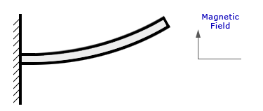
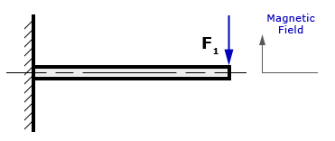

When I first started exploring permanent magnets, I quickly realized how much confusion surrounds terms like coercivity and intrinsic coercivity. These are vital for understanding the performance and durability of magnets, but they can seem complicated at first. In this post, I want to share my understanding using a mechanical analogy—a method that resonates with me as a mechanical engineer.
As someone who has worked in structural mechanics, I tend to visualize everything through mechanical systems. If it’s a dynamic problem, I instinctively reach for a spring-mass-dashpot analogy. If it’s a static scenario, my go-to is often a trusty cantilever beam. So, when I wanted to understand these magnetic properties better, the cantilever beam provided the perfect analogy.
Imagine a cantilever beam mounted vertically from one end. When it’s in its horizontal, undisturbed state (see Figure 1 below), we can think of this as being analogous to a magnet in its unmagnetized state.
Figure 1: Cantilever in its horizontal position
Now, let’s deflect the cantilever (Figure 2). This represents the magnet being fully magnetized—fully saturated. The analogy begins to take shape here.
Figure 2: Deflected cantilever representing a magnetized state
Coercivity (Hc)
To return the cantilever to its original horizontal position, we would need to apply a force, F1, in the opposite direction. Similarly, for a magnet, we need to apply a reverse magnetic field to make its net magnetic field zero. This opposing force is what we call the coercivity of the magnet, denoted as Hc (or sometimes bHc).
Figure 3: Force applied to return cantilever to the horizontal position
Intrinsic Coercivity (Hci)
Now imagine the cantilever is made of a more plastic material. If we remove the force F1, it won’t snap back to its original position. To keep it permanently at the horizontal position, we’d need a much larger force, F2. This is analogous to the intrinsic coercivity of the magnet, denoted as Hci (or iHc).
The difference between F1 and F2 depends on the material properties. For example:
- Alnico 5: F1 and F2 values (Hc and Hci) are close because it behaves more like a plastic material.
- Neodymium Iron Boron: F2 (Hci) is significantly greater than F1 (Hc), as it behaves more elastically.
Key Takeaways
Here’s what stands out for me:
- The Hci value can never be less than the Hc value.
- Higher Hci values make magnets more resistant to demagnetization due to heat, vibration, or radiation.
- Specifications on drawings should only list minimum values for Hc and Hci.
- Hc can never exceed the residual induction value (Br).
To me, a magnet with higher intrinsic coercivity is like a resilient structure that withstands the harshest conditions, offering longevity and stability. It’s one of those fascinating parallels between mechanics and magnetics that I truly enjoy exploring!